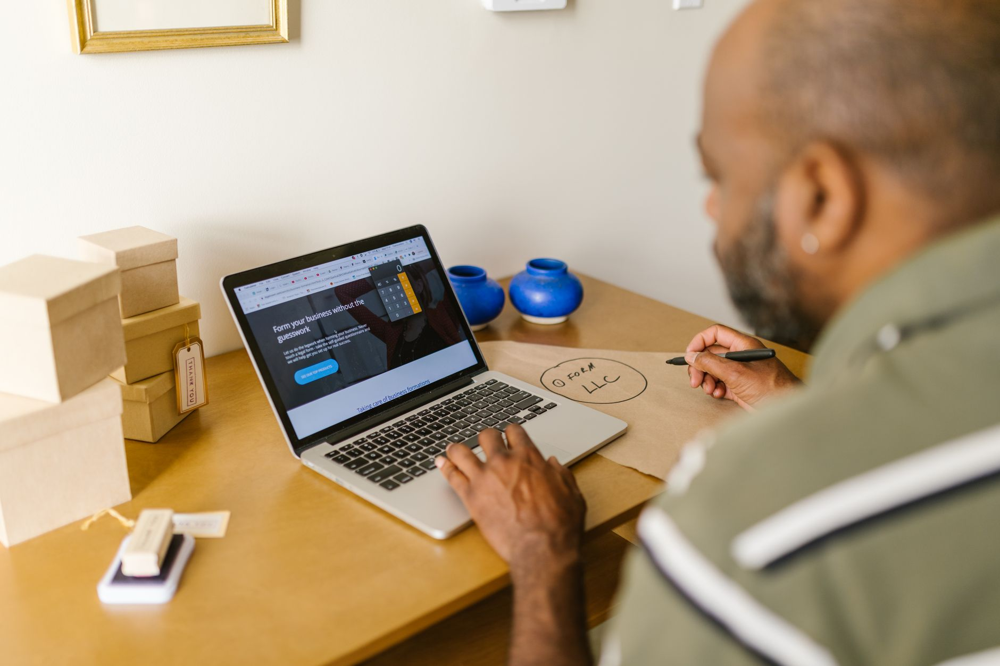

Local search ranking comes down to five concrete signals. Not a hundred obscure tactics. Five. Google's 2023 search quality evaluator guidelines and three consecutive years of Whitespark and Moz ranking factor surveys all point to the same categories. Your Google Business Profile leads, followed by reviews, citations, service area definition, and on-page signals from your website. Get these right and you rank. Miss them and your competitors take the calls.
If you're new to local SEO, start with the Local SEO for Small Business Beginner Guide for foundational context before working through the factors below.
Factor 1: Google Business Profile Signals
Your Google Business Profile is the single most influential local ranking factor. Whitespark's 2023 Local Search Ranking Factors survey places GBP signals at 36% of what determines your Map Pack position. That's more than any other category combined. The profile is free. There's no excuse for leaving any field empty.
Complete your GBP with your exact business name, address, phone number, website, hours, and service area. Add photos. Respond to every review within 24 hours. Post an update at least once per week. Each of these behaviors signals to Google that you are an active, engaged business, not a dormant listing.

The fields most local businesses leave incomplete: business description (use all 750 characters), primary and secondary categories (pick the most specific primary, add 2 to 5 secondaries), and services (list each service individually with a short description). These fields feed into what queries your listing appears for.
Factor 2: Review Velocity and Recency
Review signals account for approximately 17% of local pack ranking factors according to Moz's 2023 survey. The word to focus on is "velocity," not total count. A business receiving two reviews per week will consistently outrank one that collected 50 reviews two years ago and has gone quiet since.
Google interprets recent reviews as evidence that your business is currently operating and customers are currently choosing you. Build a system to ask every satisfied customer for a review. Text works better than email. Send the direct review link, not the general GBP URL. Make it one tap, not a search.
Factor 3: NAP Consistency and Local Citations
Citation signals, including how consistently your business name, address, and phone number appear across the web, account for roughly 11% of local ranking factors. This is lower than it was five years ago, but it's still a foundational requirement. Inconsistent NAP data acts as a drag on every other signal.
Your name, address, and phone number must match exactly across your GBP, website, Yelp, Facebook, Apple Maps, and every other directory where your business appears. Not "approximately." Exactly. "Suite 4B" and "Ste 4B" are different to Google's data parser. Run an audit with BrightLocal or Moz Local before building new citations. Fix what's broken first.
For a full walkthrough on building citations from scratch, read Local Citations for Small Business: How to Build Them.
Factor 4: Service Area Definition
If you serve customers at their location rather than a fixed address (contractors, cleaners, mobile services, field technicians), your service area settings in GBP are the primary geographic signal Google uses to match you with nearby searches. An undefined or overly broad service area is why many SABs (service-area businesses) fail to appear in Map Pack results for their actual working area.
Set your service area to the specific cities and towns you actually serve. Don't set a radius or county-wide area unless you genuinely work across all of it. Google weighs proximity heavily. A plumber who serves five specific towns will rank better in those towns than one who claims an entire state.

Factor 5: On-Page Local Signals
Your website contributes around 14% of local ranking weight through on-page signals. The three that matter most: your business name, address, and phone number in the footer of every page; your city and primary service keyword in the page title and H1 of your homepage; and a dedicated service-area page or pages that name the cities you serve.
You don't need a blog post for every neighborhood. You need a homepage that clearly states what you do and where, and a contact page that matches your GBP address exactly. Every mismatch between your website and your GBP reduces Google's confidence in your location data.
Local SEO Ranking Factors by Weight
Frequently Asked Questions
Sources
- Whitespark, "Local Search Ranking Factors," 2023. whitespark.ca/local-search-ranking-factors
- Moz, "Local Search Ranking Factors," 2023. moz.com/local-search-ranking-factors
- BrightLocal, "Local Consumer Review Survey," 2023. brightlocal.com/research/local-consumer-review-survey
- Google, "How Google determines local ranking," 2024. support.google.com/business/answer/7091